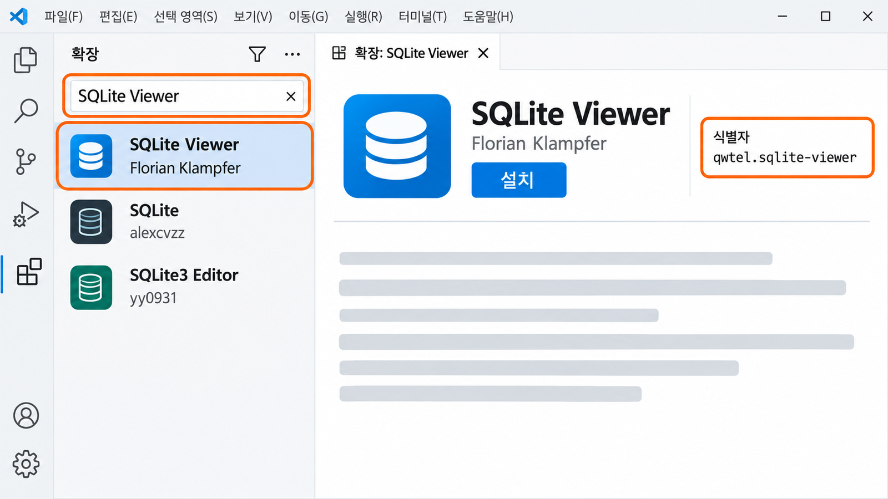
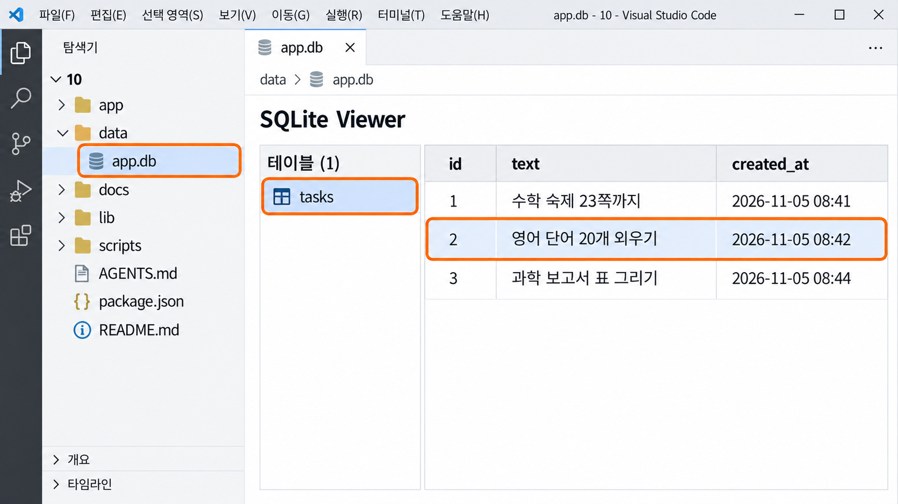

서비스가 데이터를
기억하는 과정服务记住数据
的过程
무엇을 기억하게 할지 정한 뒤 AI의 계획을 듣습니다.先亲眼看到重新打开就消失的记录，
定下要让服务记住什么，再听 AI 的计划。
다시 열었더니 사라졌다重新打开，东西却没了
10-2에서 화면의 버튼을 누르면 요청이 가고, 응답이 돌아와 결과가 보이게 만들었습니다. 그런데 그 결과는 언제까지 남아 있을까요? 오늘은 이 질문에서 시작합니다. 먼저 이런 장면을 떠올려 봅니다.10-2 做到了：按下画面上的按钮就发出请求，响应回来后显示结果。可是这个结果能留到什么时候呢？今天就从这个问题开始。先想象一下这样的场景。
어젯밤 할 일 정리 서비스에 내일 할 일 세 개를 적어 두었습니다. 아침에 다시 열었더니 목록이 텅 비어 있습니다. 화면은 멀쩡하고 버튼도 잘 눌립니다.昨晚在待办整理服务里写好了明天要做的三件事。早上重新打开，列表却空空如也。画面没问题，按钮也按得动。
서비스가 고장 난 것이 아닙니다. 적은 것을 어디에도 남겨 두지 않았을 뿐입니다. 사용자에게는 이것이 가장 큰 고장입니다. 다시 열 이유가 없어지기 때문입니다.服务并没有坏，只是写下的东西没有留在任何地方。可对用户来说，这才是最大的故障，因为再也没有理由打开它了。
사용자는 어떤 정보를 나중에 다시 보기를 기대하며,
서비스는 무엇을 기억해야 할까?用户希望之后再次看到哪些信息？
服务又该记住什么？
다시 열었더니 사라졌다重新打开，东西却没了 (이어서)（续）
그림처럼 김 서린 유리창에 쓴 글씨는 잠깐 보이다가 흘러내려 사라집니다. 지금 내 서비스의 결과도 이와 같습니다. 오늘은 사라지는 것을 직접 확인하고, 무엇을 남길지 정하고, 남겨 둘 곳인 SQLite를 알아봅니다.就像图里起雾的玻璃窗，写上去的字只看得见一会儿，随后就流下来消失了。现在我服务的结果也是这样。今天要亲手确认消失的现象，定下要留下什么，并认识用来存放的 SQLite。
- 7-1에서 배운 표 · 행 · 열과 기본키를 오늘 실제 파일에서 봅니다.今天会在真实文件里看到 7-1 学的表 · 行 · 列和主键。
- PRD 5항에 기억해야 할 기록과 그 기록을 다시 확인하는 순간을 이미 적어 두었습니다.PRD 第 5 项里已经写好了必须记住的记录和再次查看它的时刻。
- 10-2에서
docs/10_api_promise.md3항 「아직 기억하지 못하는 것」을 적었습니다.10-2 在docs/10_api_promise.md第 3 项写了“아직 기억하지 못하는 것”（还记不住的东西）。
다시 켜면 사라지는 것을 내 눈으로 본다亲眼看看重新打开就消失的东西 실습实践
말로 듣는 것보다 직접 보는 편이 빠릅니다. VS Code에서 10 폴더를 열고 내 서비스를 실행합니다. 10-2에서 연결한 핵심 행동을 한 번 하고, 결과가 보이면 새로고침과 다시 켜기를 차례로 해 봅니다.亲眼看比听讲更快。在 VS Code 里打开 10 文件夹，运行自己的服务。把 10-2 连接好的核心动作做一次，看到结果后，依次试试刷新和重新启动。
- 터미널 → 새 터미널을 열고 줄 끝이
…\10>인지 본 뒤npm run dev를 입력한다.Ready가 보이면 브라우저에서http://localhost:3000을 연다.点 终端 → 新建终端，看行末是不是…\10>，再输入npm run dev。看到Ready后，在浏览器打开http://localhost:3000。 - 10-2에서 연결한 핵심 행동을 한 번 한다. 입력하고 버튼을 누르면 결과가 보인다.把 10-2 连接好的核心动作做一次。输入后按按钮，就会看到结果。
- 브라우저에서
F5로 새로고침한다. 방금 본 결과가 남아 있는지 본다.在浏览器里按F5刷新。看看刚才的结果还在不在。 - 터미널을 누르고
Ctrl+C로 멈춘다. 「일괄 작업을 끝내시겠습니까 (Y/N)?」가 보이면Y와 Enter를 누른다.点一下终端，按Ctrl+C停止。如果出现“일괄 작업을 끝내시겠습니까 (Y/N)?”（要终止批处理操作吗），就按Y再按 Enter。 - 다시
npm run dev를 입력하고,Ready가 보이면 브라우저를 새로고침한다.再次输入npm run dev，看到Ready后刷新浏览器。
10회에는 요청을 받아 응답을 돌려주기만 했습니다. 받은 값을 어디에도 적어 두지 않았으니 다시 켜면 남는 것이 없습니다. 오늘과 다음 차시에 이 부분을 채웁니다.第 10 次课只做到接收请求、返回响应。收到的值没有记在任何地方，所以重新启动后什么都不剩。今天和下一课时就来补上这一块。
화면에 보이는 것은 아직 기억이 아니다画面上看得到，还不等于记住了
결과가 화면에 보였다고 해서 서비스가 기억한 것은 아닙니다. 지금 결과는 브라우저 화면과 실행 중인 서버 안에만 잠깐 있다가, 새로고침하거나 서버를 멈추면 함께 사라집니다. 기억하려면 값을 파일에 적어 두는 일과 다시 열었을 때 그 파일에서 읽어 오는 일이 둘 다 있어야 합니다.结果显示在画面上，并不代表服务记住了它。现在的结果只是暂时待在浏览器画面和正在运行的服务器里，一刷新或停掉服务器，就一起消失了。要记住，就得同时有把值写进文件和重新打开时从那个文件读回来这两件事。
- 입력 → 요청 → 응답 → 화면에 결과输入 → 请求 → 响应 → 画面显示结果
- 결과는 화면과 실행 중인 서버에만 있다结果只在画面和运行中的服务器里
- 새로고침 ·
Ctrl+C→ 사라진다刷新 ·Ctrl+C→ 消失
- 입력 → 요청 → 파일에 적는다 → 응답输入 → 请求 → 写进文件 → 响应
- 기록은
data/app.db파일에 한 행으로 남는다记录作为一行留在data/app.db文件里 - 다시 열면 파일에서 읽어 와 보여 준다重新打开时从文件读回来显示
저장만 하고 다시 불러오지 않으면 파일 안에는 있어도 사용자는 볼 수 없습니다. 다시 불러오기만 있으면 읽어 올 것이 없습니다. 11-2에서 둘을 함께 연결합니다.只保存不读取，记录虽然在文件里，用户却看不到；只有读取，又没有东西可读。11-2 会把两者一起连接起来。
사용자가 다시 왔을 때 무엇을 기대하는가用户再来时，期待看到什么 핵심核心
무엇을 기억할지는 서비스가 아니라 사용자에게서 출발합니다. 사용자가 다음에 다시 열었을 때 「아, 그대로 있네」 하고 기대하는 것이 기억할 기록입니다. 서비스 종류마다 그 기록이 다르니 아래 표에서 내 서비스와 가까운 줄을 찾아봅니다.记住什么，要从用户出发，而不是从服务出发。用户下次重新打开时，期待“啊，还在”的那个东西，就是要记住的记录。不同类型的服务，记录也不同。在下表里找找和自己服务相近的一行。
| 서비스服务 | 기록이 생기는 행동产生记录的动作 | 기억할 것要记住的 | 다시 보는 순간再次查看的时刻 |
|---|---|---|---|
| 할 일 정리待办整理 | 할 일을 쓰고 추가를 누른다写下待办，按添加 | 할 일 내용 · 추가한 시각待办内容 · 添加时间 | 다음 날 다시 열었을 때 목록第二天重新打开时的列表 |
| 계산 · 변환计算 · 换算 | 값을 넣고 계산을 누른다输入数值，按计算 | 입력값과 결과输入值和结果 | 최근 기록 목록을 볼 때查看最近记录列表时 |
| 추천推荐 | 조건을 고르고 추천을 누른다选好条件，按推荐 | 고른 조건과 추천 결과选的条件和推荐结果 | 지난 추천을 다시 볼 때再次查看以前的推荐时 |
| 퀴즈 · 연습测验 · 练习 | 한 판을 끝낸다做完一轮 | 점수와 푼 날짜分数和做题日期 | 내 기록이 늘었는지 볼 때看自己的记录有没有进步时 |
내 서비스의 기록은 PRD 5항과 9회의 사용자 흐름에 이미 나와 있습니다. 오늘은 그중에서 처음 연결할 하나를 고릅니다. 흐름에 없던 정보를 「나중에 쓸지도 모른다」는 이유로 덧붙이지 않습니다.自己服务的记录，在 PRD 第 5 项和第 9 次课的用户流程里已经写过了。今天从中挑出最先连接的一种。不要因为“以后也许用得上”，就加上流程里没有的信息。
의미 있는 기록 하나부터 시작한다从一种有意义的记录开始 핵심核心
기록을 고를 때 가장 흔한 실수는 「데이터베이스를 썼다」는 표시를 내려고 서비스와 상관없는 값을 저장하는 것입니다. 방문 횟수나 버튼을 누른 횟수는 쉽게 저장되지만 사용자는 그것을 다시 볼 이유가 없습니다. 아래 네 질문에 모두 「예」인 기록 하나면 충분합니다.挑记录时最常见的错误，是为了表明“用了数据库”，去保存和服务无关的值。访问次数、按按钮的次数很容易保存，可用户没有理由再去看它。下面四个问题都答“是”的记录，有一种就够了。
- 핵심 기능을 실행하면 저절로 생기는 기록인가?是执行核心功能时自然产生的记录吗？
- 사용자가 나중에 다시 보았을 때 의미가 있는가?用户之后再看时，有意义吗？
- 실제 이름 · 연락처 같은 개인정보 없이도 만들 수 있는가?不用真实姓名、联系方式这类个人信息也能做出来吗？
- 표 하나로 충분하다면 표를 하나만 쓰는가?一张表就够的话，是不是只用一张表？
보여 주려고 예시 기록을 미리 열 개 넣어 두거나, 아무도 보지 않는 방문 횟수를 세는 것은 기억이 아닙니다. 평가에서도 표의 개수가 아니라 계획한 기록이 실제로 저장되고 사용자에게 다시 보이는지를 봅니다.为了展示而预先放进十条示例记录，或者统计没人会看的访问次数，都不算记住。评价时看的也不是表的数量，而是计划好的记录是否真的保存了、是否能再次给用户看到。
내 서비스가 기억할 기록을 세 줄로 적는다用三行写下我的服务要记住的记录 실습实践
이제 내 서비스로 정합니다. 탐색기에서 docs 폴더를 열면 PRD와 개발 계획, 10-2에서 쓴 API 약속표가 있습니다. 세 파일에서 기록에 관한 줄을 찾아, 약속표 3항의 세 줄이 서로 맞는지 확인합니다. 이 세 줄은 오늘 마지막에 AI가 읽을 자료입니다.现在用自己的服务来定。在资源管理器里打开 docs 文件夹，里面有 PRD、开发计划，还有 10-2 写的 API 约定表。在三个文件里找到关于记录的行，确认约定表第 3 项的三行彼此对得上。这三行是今天最后 AI 要读的资料。
docs/PRD.md의 5. 데이터에서 「서비스가 반드시 기억해야 할 기록」과 「다시 확인하는 순간」을 찾는다.在docs/PRD.md的 5. 데이터（数据）里，找到“必须记住的记录”和“再次查看的时刻”。docs/09_development_plan.md의 3. 대표 정상 흐름 마지막 칸과 7항의 11회 줄을 본다.看docs/09_development_plan.md里 3. 대표 정상 흐름（代表性正常流程）的最后一栏，以及第 7 项第 11 次课那一行。docs/10_api_promise.md의 3. 아직 기억하지 못하는 것 세 줄을 앞의 두 파일과 맞게 채우거나 고친다.按照前两个文件，填写或修改docs/10_api_promise.md里 3. 아직 기억하지 못하는 것（还记不住的东西）的三行。Ctrl+S로 저장한다.按Ctrl+S保存。
- 다시 켜면 사라지는 것: 추가한 할 일 목록 - 11회에 SQLite에 저장할 핵심 기록: 할 일 내용, 추가한 시각 - 저장된 기록을 다시 보는 순간: 다음 날 다시 열었을 때 목록 맨 위부터
- 다시 켜면 사라지는 것（重新打开就消失的）: 添加的待办列表 - 11회에 SQLite에 저장할 핵심 기록（第 11 次课存进 SQLite 的核心记录）: 待办内容、添加时间 - 저장된 기록을 다시 보는 순간（再次查看已存记录的时刻）: 第二天重新打开时，从列表最上面开始
내 서비스가 기억할 기록을 세 줄로 적는다用三行写下我的服务要记住的记录 (이어서)（续）
세 줄을 적었으면 앞 쪽의 네 질문으로 다시 봅니다. 특히 「저장할 핵심 기록」 줄에 이름이나 전화번호가 들어 있지 않은지, 핵심 기능과 상관없는 값이 끼어 있지 않은지 봅니다. 세 파일이 서로 다르면 PRD를 고치지 말고 약속표 쪽을 맞춥니다.写好三行后，用前一页的四个问题再看一遍。特别要看“要保存的核心记录”那行里有没有姓名或电话号码，有没有夹着和核心功能无关的值。三个文件互相不一致时，不要改 PRD，而是调整约定表这边。
| 이런 줄이 보이면看到这样的行 | 이렇게 고친다这样改 |
|---|---|
| 「사용자 이름, 전화번호」“用户姓名、电话号码” | 빼거나 별명 한 칸으로 줄인다. 7-2에서 정한 「저장하지 않을 정보」를 다시 본다.删掉，或缩成一栏昵称。再看一遍 7-2 定下的“不保存的信息”。 |
| 「방문 횟수」 「클릭 수」“访问次数”“点击次数” | 사용자가 다시 볼 기록으로 바꾼다. 핵심 행동의 입력과 결과가 대개 정답이다.换成用户会再看的记录。核心动作的输入和结果通常就是答案。 |
| 「모든 기록」 「사용자 정보 전체」“所有记录”“用户信息全部” | 핵심 기능에서 생기는 한 종류로 좁힌다.缩小到核心功能产生的一种记录。 |
| 3항이 비어 있다第 3 项是空的 | PRD 5항의 첫 줄을 옮겨 적는다. PRD 5항도 비어 있으면 손을 든다.把 PRD 第 5 项的第一行抄过来。PRD 第 5 项也是空的就举手。 |
AGENTS.md에 「docs/ 안의 문서는 고치지 않는다」가 적혀 있어서 AI는 이 파일들을 읽기만 합니다. 약속표를 고치는 것은 내 일입니다.AGENTS.md 里写着“不修改 docs/ 里的文件”，所以 AI 只会读这些文件。改约定表是我自己的事。
SQLite는 프로젝트 안의 파일 하나다SQLite 是项目里的一个文件 핵심核心
기억할 기록을 정했으니 이제 적어 둘 곳을 봅니다. 우리 표준 프로젝트는 SQLite를 씁니다. 7-1에서 데이터베이스를 「서비스의 기억 장소」라고 했는데, SQLite는 그 기억 장소를 따로 돌아가는 큰 장치가 아니라 프로젝트 폴더 안의 파일 하나로 만든 것입니다.要记住的记录定好了，现在来看把它写在哪里。我们的标准项目用的是 SQLite。7-1 说过，数据库是“服务记忆的地方”。SQLite 把这个地方做成了项目文件夹里的一个文件，而不是另外运行的大型装置。
- 현상现象
- 휴대전화의 메모 앱은 회원 가입을 하지 않아도 적은 것이 남아 있습니다. 앱 안 어딘가의 파일에 적어 두기 때문입니다.手机里的备忘录 App 不用注册，写下的东西也会留着。因为它记在了 App 里某个地方的文件中。
- 쉬운 설명通俗说法
- 외부 데이터베이스 계정 없이, 파일 하나에 표 · 행 · 열로 기록을 적어 두는 방법입니다.不需要外部数据库账号，用一个文件按表 · 行 · 列记下记录的方法。
- 정확한 정의准确定义
- 별도의 서버 없이 파일 하나 안에 표 · 행 · 열 구조로 데이터를 저장하고 꺼내 보는 관계형 데이터베이스.不需要另外的服务器，在一个文件里按表 · 行 · 列的结构保存和读取数据的关系型数据库。
- 경계边界
- 7-1의 표 · 행 · 열 · 기본키는 그대로입니다. 다른 점은 위치입니다. 외부 서비스에 접속하지 않고 프로젝트 안의
data/app.db를 씁니다.7-1 的表 · 行 · 列 · 主键都一样。不同的是位置：不连接外部服务，而是用项目里的data/app.db。 - 문장 속 사용句中用法
- “내 서비스의 할 일 기록은 SQLite 파일
data/app.db에 저장된다.”“我的服务的待办记录保存在 SQLite 文件data/app.db里。”
SQLite는 프로젝트 안의 파일 하나다SQLite 是项目里的一个文件 (이어서)（续）
그림처럼 기록은 상자 하나에 카드가 쌓이듯 파일 하나에 쌓입니다. 이 파일은 처음 저장할 때 data 폴더 안에 저절로 생기고, 지금은 아직 없습니다. 내 프로젝트마다 자기 파일이 따로 있어서 다른 사람의 기록과 섞이지 않습니다.就像图里的卡片堆在一个盒子里，记录也堆在一个文件里。这个文件会在第一次保存时自动出现在 data 文件夹里，现在还没有。每个人的项目都有自己的文件，不会和别人的记录混在一起。
app.db는 글자 파일이 아니라서 VS Code 기본 편집기로 열면 알아볼 수 없는 기호가 보입니다. 고장이 아닙니다. 6절에서 설치할 SQLite Viewer로 열어야 표와 행이 보입니다. 기본 편집기로 열었다면 고치지 말고 그대로 닫습니다.app.db 不是文字文件，用 VS Code 默认编辑器打开会看到认不出的符号。这不是坏了。要用第 6 节安装的 SQLite Viewer 打开，才能看到表和行。如果用默认编辑器打开了，什么都别改，直接关掉。
7-1에서 본 표가 파일 안에 그대로 있다7-1 看过的表，原样待在文件里 핵심核心
SQLite 파일 안에는 7-1에서 엑셀 성적표와 비교했던 그 표가 들어 있습니다. 할 일 정리 서비스라면 아래와 같은 표 하나면 충분합니다. 7-1에서처럼 「이 표의 한 행은 무엇인가?」를 먼저 물어봅니다. 답은 「할 일 하나」입니다.SQLite 文件里装的，就是 7-1 拿来和 Excel 成绩表比较的那种表。待办整理服务的话，下面这样一张表就够了。像 7-1 那样，先问“这张表的一行是什么？”答案是“一条待办”。
| idid | texttext | created_atcreated_at |
|---|---|---|
| 11 | 수학 숙제 23쪽까지数学作业做到第 23 页 | 2026-11-05 08:412026-11-05 08:41 |
| 22 | 영어 단어 20개 외우기背 20 个英语单词 | 2026-11-05 08:422026-11-05 08:42 |
| 33 | 과학 보고서 표 그리기画科学报告的表格 | 2026-11-05 08:442026-11-05 08:44 |
| 이름名称 | 뜻意思 |
|---|---|
tasks · 표 이름tasks · 表名 | 할 일을 모아 두는 표收集待办的表 |
id · 기본키id · 主键 | 행 하나를 딱 집어내는 번호. 저장할 때 1, 2, 3… 저절로 붙는다精确找出一行的编号。保存时自动编上 1, 2, 3… |
text · 열text · 列 | 사용자가 입력한 할 일 내용用户输入的待办内容 |
created_at · 열created_at · 列 | 추가한 시각. 저장할 때 저절로 적힌다添加时间。保存时自动写入 |
표는 lib/db.js의 getDb()에서 만든다表在 lib/db.js 的 getDb() 里建 (이어서)（续）
이 표는 누가 만들까요? 표준 프로젝트의 lib/db.js를 열어 봅니다. 파일에 연결하는 부분은 선생님이 정해 두었고, 가운데에 「내 서비스의 표를 여기서 만든다」는 빈자리가 있습니다. 11-2에서 AI가 이 자리에 내 서비스의 표를 만드는 한 줄을 넣습니다.这张表由谁来建呢？打开标准项目里的 lib/db.js 看看。连接文件的部分老师已经定好了，中间留着“在这里建我服务的表”的空位。11-2 会让 AI 在这个位置加上一行，建出我服务的表。
const DB_PATH = ... path.join(process.cwd(), "data", "app.db");
export function getDb() {
if (!db) {
db = new DatabaseSync(DB_PATH);
// 내 서비스의 표를 여기서 만든다. 이미 있으면 그대로 둔다. (11회)
}
return db;
}const DB_PATH = ... path.join(process.cwd(), "data", "app.db");
export function getDb() {
if (!db) {
db = new DatabaseSync(DB_PATH);
// 在这里建我服务的表。已经有了就保持原样。（第 11 次课）
}
return db;
}CREATE TABLE IF NOT EXISTS tasks (id ..., text ..., created_at ...)
CREATE TABLE IF NOT EXISTS tasks (id ..., text ..., created_at ...)
이 줄에서 읽을 것은 세 가지뿐입니다. tasks는 표 이름, 괄호 안은 열 이름, IF NOT EXISTS는 「없으면 만들고 이미 있으면 그대로 둔다」입니다. 그래서 서버를 다시 켜도 쌓인 행이 지워지지 않습니다.这一行只要读懂三样：tasks 是表名，括号里是列名，IF NOT EXISTS 的意思是“没有就建，已经有了就保持原样”。所以重新启动服务器，已经存下的行也不会被清掉。
VS Code에 SQLite Viewer를 설치한다在 VS Code 里安装 SQLite Viewer 실습实践
app.db는 기본 편집기로 읽을 수 없으니, 표와 행을 보여 주는 확장을 설치합니다. 2회에 Python 확장을 설치한 것과 같은 방법입니다. 다만 검색하면 이름이 비슷한 확장이 여럿 나오므로 확장 ID를 꼭 확인합니다.app.db 用默认编辑器读不了，所以要安装一个能显示表和行的扩展。方法和第 2 次课安装 Python 扩展一样。不过搜索时会出现好几个名字相似的扩展，一定要确认扩展 ID。
| 항목项目 | 값值 |
|---|---|
| 확장 이름扩展名称 | SQLite ViewerSQLite Viewer |
| 확장 ID扩展 ID | qwtel.sqlite-viewerqwtel.sqlite-viewer |
| 검색어搜索词 | SQLite ViewerSQLite Viewer |
- VS Code 왼쪽 활동 막대에서 확장(네모 네 개 모양,
Ctrl+Shift+X)을 연다.在 VS Code 左侧活动栏打开扩展（四个小方块的图标，Ctrl+Shift+X）。 - 검색칸에
SQLite Viewer를 입력한다.在搜索框输入SQLite Viewer。 - 목록에서 SQLite Viewer를 누른다. 오른쪽 설명 화면의 식별자(Identifier)가
qwtel.sqlite-viewer인지 확인한다.在列表里点 SQLite Viewer。确认右边说明画面里的 식별자（Identifier，扩展 ID）是qwtel.sqlite-viewer。 - 설치(Install)를 누른다. 단추가 제거(Uninstall)로 바뀌면 끝이다.点 설치（Install，安装）。按钮变成 제거（Uninstall，卸载）就完成了。
VS Code에 SQLite Viewer를 설치한다在 VS Code 里安装 SQLite Viewer (이어서)（续）
아래 화면에서 주황 테두리 세 곳을 차례로 봅니다. 검색칸, 고를 확장, 그리고 설명 화면의 확장 ID(식별자)입니다. 이름은 같아 보여도 ID가 다르면 다른 확장이니 설치하지 않습니다. 설치가 끝나면 오늘은 여기까지만 하고, 파일을 여는 것은 11-2에서 합니다.在下面的画面里依次看三个橙色框：搜索框、要选的扩展，以及说明画面里的扩展 ID。名字看起来一样，ID 不同就是另一个扩展，不要安装。装好后今天就到这一步，打开文件放到 11-2 做。

SQLite Viewer는 표와 행을 보여 주기만 합니다. 값을 고치거나 지우는 기능은 쓰지 않습니다. 기록은 언제나 내 서비스의 화면에서 만들고, Viewer는 그것이 정말 남았는지 확인하는 데만 씁니다.SQLite Viewer 只负责显示表和行。不要用它改值或删值。记录永远在自己服务的画面上产生，Viewer 只用来确认它是否真的留下了。
Viewer로 열면 표와 행이 보인다用 Viewer 打开，就能看到表和行
내 data/app.db는 11-2에서 처음 저장할 때 생기므로, 오늘은 할 일 예시 파일을 열면 어떻게 보이는지 미리 봅니다. 왼쪽에 표 이름이, 오른쪽에 열과 행이 앞 쪽의 표 모양 그대로 나옵니다.我的 data/app.db 要到 11-2 第一次保存时才出现，所以今天先看看打开待办示例文件是什么样子。左边是表名，右边是列和行，和前面那张表一模一样。

- 입력한 값이 새 행으로 생겼는가输入的值有没有变成新的一行
- 다시 켠 뒤에도 그 행이 남았는가重新启动后那一行还在吗
- 값을 직접 고치거나 지우기直接改值或删值
- SQL 문장을 쓰거나 실행하기写或执行 SQL 语句
고치기 전에 계획부터 듣는다动手改之前，先听计划 실습实践
이제 AI에게 저장을 맡길 차례입니다. 다만 바로 「만들어 줘」라고 하지 않습니다. 저장을 붙이면 lib/db.js, API 파일, 화면 파일이 한꺼번에 바뀌어서, 다 바뀐 뒤에 표 이름이나 열이 틀린 것을 알면 되돌리기 어렵습니다. 그래서 오늘은 계획만 듣고, 고치는 것은 11-2에서 「진행해」로 시킵니다.现在轮到把保存交给 AI 了。但不要直接说“帮我做出来”。一接上保存，lib/db.js、API 文件、画面文件会一下子都变，等全改完才发现表名或列不对，就很难改回去。所以今天只听计划，动手改放到 11-2 用“진행해”（开始做）来让它做。
npm run dev가 켜진 터미널은 그대로 둔다. 터미널 오른쪽 위의 +로 터미널을 하나 더 연다.运行着npm run dev的终端保持不动。用终端右上角的 + 再开一个终端。- 새 터미널의 줄 끝이
…\10>인지 보고opencode를 켠다.看新终端的行末是不是…\10>，再打开opencode。 - 아래 요청문을 복사해 그대로 보낸다.复制下面的请求，原样发送。
docs 폴더의 PRD.md 5항, 09_development_plan.md의 3항과 7항 11회 줄, 10_api_promise.md 3항을 읽어 줘. 아직 코드는 고치지 마. 내 서비스의 핵심 기록을 SQLite에 저장하고 다시 보여 주려면 어떻게 할지 쉬운 말로 먼저 설명해 줘. - 사용자의 어떤 행동에서 무엇을 저장하는지 - 사용자가 언제, 화면의 어디에서 그 기록을 다시 보는지 - 만들 표의 이름과 열 이름, 열마다 담는 것 (lib/db.js의 getDb()에서 만든다) - 고칠 파일 이름 표는 꼭 필요한 만큼만 만들고, 실제 이름·연락처 같은 개인정보 열은 만들지 마. 예시 기록을 미리 넣지 말고, 새 패키지도 설치하지 마.
请读 docs 文件夹里 PRD.md 的第 5 项、09_development_plan.md 的第 3 项和第 7 项中第 11 次课那一行、10_api_promise.md 的第 3 项。 先不要改代码。 先用简单的话说明：要把我服务的核心记录保存到 SQLite 并重新显示出来，打算怎么做。 - 用户做了什么动作时，保存什么 - 用户什么时候、在画面的哪里再次看到这条记录 - 要建的表的名称、列名，以及每一列装什么（在 lib/db.js 的 getDb() 里建） - 要改的文件名 表只建真正需要的数量，不要建真实姓名、联系方式这类个人信息的列。 不要预先放入示例记录，也不要安装新的包。
AI의 계획을 PRD와 한 줄씩 대 본다把 AI 的计划和 PRD 一行一行对照 확인确认
AI가 계획을 설명하면 docs/PRD.md 5항과 약속표 3항을 옆에 두고 아래 질문으로 대 봅니다. 열 이름이 영어로 나와도 괜찮습니다. 그 열에 무엇을 담는지 AI의 설명을 읽고, 내가 적은 기록과 같은 것인지만 판단합니다.AI 说明计划后，把 docs/PRD.md 第 5 项和约定表第 3 项放在旁边，用下面的问题对照。列名是英文也没关系。读 AI 对每一列装什么的说明，只判断它和我写的记录是不是同一个东西。
| 확인할 질문要确认的问题 | 대 볼 곳对照的地方 |
|---|---|
| 표의 역할이 PRD 5항의 후보 테이블과 같은가?表的作用和 PRD 第 5 项的候选数据表一样吗？ | PRD 5항PRD 第 5 项 |
| 열마다 담는 것이 「저장할 핵심 기록」에 있는가?每列装的东西都在“要保存的核心记录”里吗？ | 약속표 3항约定表第 3 项 |
| 이름 · 연락처 같은 개인정보 열이 없는가?没有姓名、联系方式这类个人信息的列吗？ | PRD 5항 「저장하지 않을 정보」PRD 第 5 项“不保存的信息” |
| 표 하나로 될 일을 여러 개로 나누지 않았는가?有没有把一张表就能做的事分成好几张？ | PRD 5항 후보 테이블PRD 第 5 项候选数据表 |
| 다시 보는 순간과 화면의 위치가 내 흐름과 같은가?再次查看的时刻和画面位置，和我的流程一样吗？ | 개발 계획 3항开发计划第 3 项 |
___ 열은 빼 줘. 사용자는 이 정보를 입력한 적이 없어. 아직 고치지 말고, 바뀐 계획만 다시 알려 줘.
请去掉 ___ 列。用户从来没有输入过这个信息。 先不要改，只把改过的计划再告诉我一遍。
확인 문제确认题 확인确认
오늘 배운 것을 세 문제로 확인합니다. 답을 먼저 말해 보고 해설을 엽니다. 막히는 문제가 있으면 그 절로 돌아가 다시 읽습니다. 해설은 인쇄하면 펼쳐진 채로 나옵니다.用三道题确认今天学的内容。先说出答案，再打开解析。答不上来的题，就回到那一节再读一遍。打印时解析会是展开的。
해설 보기查看解析
결과가 브라우저 화면과 실행 중인 서버 안에만 있었고, 파일에 적어 두지 않았기 때문입니다. 기억하려면 파일에 저장하는 일과 다시 열 때 그 파일에서 읽어 오는 일이 둘 다 필요합니다.因为结果只在浏览器画面和运行中的服务器里，没有写进文件。要记住，就需要把它存进文件，以及重新打开时从文件读回来，两件事都要有。
해설 보기查看解析
사용자가 그것을 다시 볼 이유가 없고, 사용자 흐름에도 나오지 않기 때문입니다. 기억할 기록은 핵심 기능을 쓰면 저절로 생기고, 사용자가 나중에 다시 보았을 때 의미가 있어야 합니다.因为用户没有理由再去看它，用户流程里也没有它。要记住的记录，应该是使用核心功能时自然产生、用户之后再看时有意义的东西。
해설 보기查看解析
저장을 붙이면 여러 파일이 한꺼번에 바뀝니다. 고치기 전에 표 이름과 열을 PRD 5항과 대 볼 수 있어야, 틀린 곳을 되돌리기 쉬운 지금 바로잡을 수 있습니다.一接上保存，好几个文件会同时改变。在动手之前就能把表名和列和 PRD 第 5 项对照，才能趁现在还容易改回时纠正错误。
기억할 것을 정하고, 적어 둘 곳을 알았다定下了要记住的东西，也知道了写在哪里
오늘은 다시 켜면 사라지는 결과를 직접 보고, 내 서비스가 기억할 기록 하나를 약속표 3항에 정리했습니다. 그 기록이 쌓일 SQLite 파일과 확인 도구 SQLite Viewer를 알아보고, AI에게서 저장 계획을 들어 PRD와 대 보았습니다. 다음 차시에는 그 계획을 실제로 연결합니다.今天亲眼看到了重新启动就消失的结果，把自己服务要记住的一种记录整理到了约定表第 3 项。还认识了存放记录的 SQLite 文件和查看工具 SQLite Viewer，并听了 AI 的保存计划、和 PRD 对照过。下一课时就把这个计划真正连接起来。
- 화면에 보이는 것은 아직 기억이 아니다. 파일에 저장하기와 다시 불러오기가 한 짝이다.画面上看得到还不等于记住。存进文件和重新读取是一对。
- 기억할 기록은 핵심 기능에서 저절로 생기고 사용자가 다시 볼 이유가 있는 것 하나부터 고른다.要记住的记录，从核心功能自然产生、用户有理由再看的一种开始选。
- SQLite는 프로젝트 안의 파일
data/app.db하나이고, 7-1의 표 · 행 · 열이 그대로 들어 있다.SQLite 就是项目里的一个文件data/app.db，里面原样装着 7-1 的表 · 行 · 列。 - AI에게는 계획부터 듣고, 표 이름과 열을 PRD 5항과 대 본 뒤에 고치게 한다.让 AI 先讲计划，把表名和列和 PRD 第 5 项对照之后，再让它改。
다음 차시에는 오늘 들은 계획에 「진행해」를 보내 저장과 다시 불러오기를 연결합니다. 화면에서 기록을 남기고, SQLite Viewer로 행을 보고, 서버를 껐다 켜도 기록이 남는지 확인합니다. OpenCode 창은 닫지 않고 그대로 둡니다.下一课时，对今天听到的计划发送“진행해”（开始做），把保存和重新读取连接起来。在画面上留下记录，用 SQLite Viewer 看行，再确认关掉服务器重新打开后记录还在。OpenCode 窗口不要关，保持原样。
11-2. SQLite 데이터 저장 연결하기 →11-2. 连接 SQLite 数据保存 →이럴 때는 이렇게 한다遇到这些情况就这样做 필요할 때需要时
오늘 막히는 자리는 대개 실행과 확장 설치 쪽입니다. 내 상황과 같은 줄을 찾아 오른쪽대로 해 봅니다. 그래도 안 되면 손을 듭니다. 11-2에서도 같은 폴더와 같은 터미널 두 개를 쓰니 여기서 정리해 두면 다음 차시가 편합니다.今天卡住的地方，大多和运行、安装扩展有关。找到和自己情况一样的那行，照右边做。还不行就举手。11-2 也用同一个文件夹和同样的两个终端，这里理顺了，下一课时会轻松很多。
npm run dev에서 빨간 글자가 나오고 Ready가 안 보인다npm run dev 出现红字，看不到 Ready | 줄 끝이 …\10>인지 먼저 봅니다. 맞는데도 안 되면 빨간 글자 첫 줄을 그대로 두고 손을 듭니다. 10-2의 핵심 기능이 아직 안 된다면 오늘은 그것부터 바로잡습니다.先看行末是不是 …\10>。对了还不行，就保留红字的第一行，举手。如果 10-2 的核心功能还没做好，今天先把它弄好。 |
| 새로고침해도 결과가 남아 있다刷新后结果还在 | 10-2에서 AI가 이미 저장을 붙였을 수 있습니다. 서버를 Ctrl+C로 멈췄다 다시 켜서 확인하고, 그래도 남으면 손을 들어 어디에 저장되는지 같이 봅니다.可能 10-2 时 AI 已经接上了保存。用 Ctrl+C 停掉服务器再打开确认；还在的话就举手，一起看存在了哪里。 |
| 확장 검색에 SQLite Viewer가 여러 개 나온다扩展搜索出现好几个 SQLite Viewer | 하나씩 눌러 설명 화면의 확장 ID를 봅니다. qwtel.sqlite-viewer만 설치합니다. 다른 것을 이미 설치했다면 그 확장의 제거(Uninstall)를 누릅니다.逐个点开，看说明画面里的扩展 ID。只安装 qwtel.sqlite-viewer。已经装了别的，就点那个扩展的 제거（Uninstall，卸载）。 |
| AI가 계획을 말하지 않고 바로 파일을 고쳤다AI 没讲计划就直接改了文件 | 「방금 고친 것을 모두 원래대로 되돌려 줘. 아직 고치지 말고 계획만 설명해 줘」를 보냅니다. 탐색기에서 바뀐 파일이 되돌아갔는지 직접 봅니다.发“把刚才改的全部改回原样。先不要改，只说明计划”。在资源管理器里亲自看改过的文件有没有恢复。 |
FreeUsageLimitError나 429가 나온다出现 FreeUsageLimitError 或 429 | 무료 모델 사용량이 잠깐 찬 것입니다. 1~2분 기다렸다가 같은 요청을 다시 보냅니다. 그동안 약속표 3항을 다시 읽습니다.免费模型的用量暂时满了。等 1~2 分钟再发同样的请求。这段时间再读一遍约定表第 3 项。 |